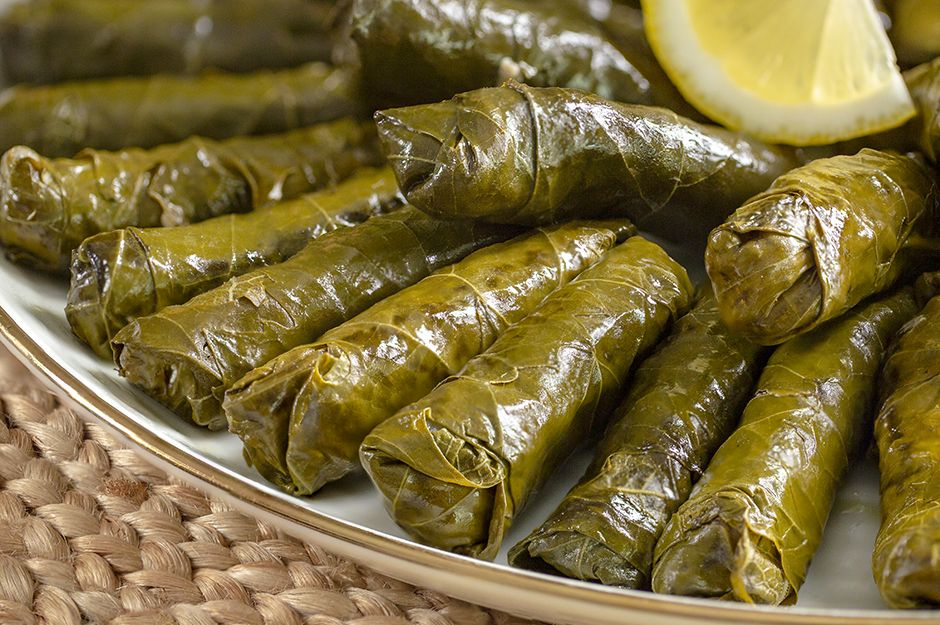

Leaf Rolls With Olive Oil

Leaf rolls with olive oil is one of the most beloved and timeless recipes that can be eaten at any time of the day, from holiday meals to golden days.
By following certain tricks and flavor secrets, and spending a little time, you can prepare wonderful wraps.
Ingredients
- 300 grams of vine leaves
- 1 lemon
- 4 tablespoon olive oil
- 1.5 cups hot water
For the filling
- 1/2 water glass olive oil
- 3 pieces of medium size dry onion
- 1,5 water glass rice
- 1 water glass hot water
- 1 tablespoon bell pistachio
- 1 tablespoon currants
- 1 teaspoon salt
- 1 teaspoon black pepper
- 1 teaspoon mint
- 1 teaspoon allspice
- 1/2 teaspoon Cinnamon
Recipe Instructions
- To prepare the filling; heat half a glass of olive oil in a wide-based pot. Roast 3 grated onions until they turn slightly colored. Then add 1.5 tablespoons of bell pistachios and continue roasting.
- Soak 1.5 cups of rice in lukewarm water for 5 minutes and drain it, then fry it with the onions until the rice turns transparent.
- Then add 1 tablespoon of currants, 1 teaspoon each of salt, black pepper, allspice and cinnamon and mix.
- Add about 1 cup of hot water and cook the stuffing over low heat for about 5 minutes and then remove from the stove.
- Spread the pickled vine leaves on the countertop, keeping the veined parts on top. Place a dessert spoonful of the prepared and warmed stuffing in the center of each leaf.
- Bring the edges in and work your way from the wide side to the tip.
- Wrap all the leaves tightly.
- Cover the bottom of the wrapping pot with a few vine leaves.
- Arrange the wraps in rows, side by side. Slice the lemon into rings and place on top of the wraps.
- Cover them with a flat serving plate so that they do not open during cooking. Add 1.5 cups of hot water and 2 tablespoons of olive oil to the pot and cook the wraps over low heat for about 35 minutes.
- Serve warm or cold according to your preference.
Return the main page